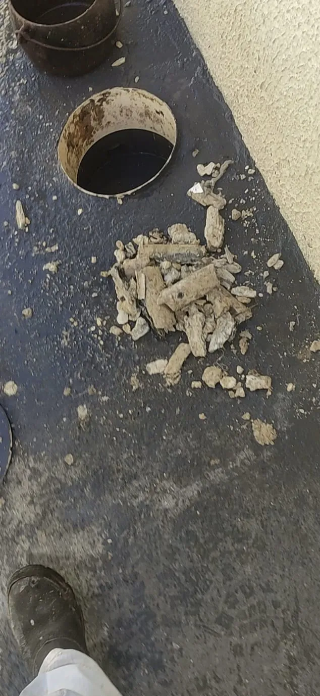

Caixa de gordura: de quanto em quanto tempo limpar
Publicado em · Atualizado em · 4 min de leitura
Depende de quanta gordura desce pela pia. Como referência, a Sanepar orienta limpar a caixa de gordura a cada 3 a 6 meses em residências, e com frequência mensal ou até quinzenal em restaurantes e cozinhas comerciais. O sinal mais seguro é olhar dentro: quando a camada de gordura chega perto da saída da caixa, já passou da hora. Caixa cheia deixa a gordura seguir para a rede, onde ela endurece e entope.
A caixa de gordura é uma das peças mais esquecidas da casa. Ninguém lembra dela até a pia parar ou o quintal começar a cheirar mal. E quando ela fica cheia por muito tempo, a gordura passa para a rede de esgoto, onde o problema fica bem maior. Abaixo explico como ela funciona, como saber se está na hora de limpar e o que dá para fazer sem chamar ninguém.
De quanto em quanto tempo limpar a caixa de gordura?
| Tipo de imóvel | Referência de limpeza | Limpe antes se... |
|---|---|---|
| Casa | A cada 3 a 6 meses | Cozinha muito com óleo ou fritura |
| Condomínio (caixa coletiva) | Rotina fixa, definida pela administração | Algum morador reclama de pia lenta ou cheiro |
| Restaurante, lanchonete, buffet | Mensal ou até quinzenal | Antes de eventos grandes ou temporadas de movimento |
Esses prazos são referência (a Sanepar, companhia de saneamento do Paraná, orienta nessa faixa). A forma mais confiável de definir a frequência do seu imóvel é abrir a caixa algumas vezes e ver em quanto tempo a camada de gordura se forma.
Como a caixa de gordura funciona?
A água da pia da cozinha não vai direto para a rede: passa antes pela caixa de gordura. Lá dentro, a água desacelera, a gordura (mais leve) sobe e fica presa na superfície, e a água segue por uma saída mais baixa. A norma de esgoto predial (ABNT NBR 8160) prevê a caixa de gordura justamente para reter a gordura antes que ela chegue à tubulação.
O problema é que a caixa só retém, não elimina. A gordura vai acumulando e, quando a camada chega à saída, começa a passar junto com a água para a rede. Uma caixa cheia deixa de proteger o sistema e vira parte do problema.
Quais os sinais de caixa de gordura cheia?
- Mau cheiro forte perto da caixa ou no quintal.
- Água escura ou preta dentro da caixa.
- Pia da cozinha escoando devagar, mesmo com o sifão limpo.
- Camada grossa de gordura na superfície, perto da altura da saída.
- Caixa transbordando ou água saindo pela tampa.
Caso real (Goiânia): a pia da cozinha não escoava e a caixa de gordura estava com a água totalmente preta. Depois do desentupimento da pia e da limpeza da caixa, a água voltou a ficar transparente e a pia passou a escoar normalmente.
Caso real (o "cano de gordura"): em outro atendimento, abrimos a caixa de gordura e, junto com a placa da superfície, saiu um bloco sólido, branco-amarelado, no formato exato do cano, com a marca da curva da conexão. É o que acontece quando a caixa fica cheia: a gordura passa para o cano seguinte, esfria e se molda lá dentro.

Dá para limpar a caixa de gordura sozinho?
Em casa, com caixa pequena e gordura ainda mole, dá:
- Use luva, máscara e roupa que possa sujar. O cheiro é forte.
- Abra a tampa e retire a camada de gordura da superfície com uma pá pequena ou um pote, colocando num balde.
- Coloque a gordura retirada em saco plástico resistente, bem fechado, e descarte no lixo comum. Nunca jogue de volta no vaso, no ralo ou na rua.
- Raspe as paredes da caixa, feche bem a tampa e jogue água da torneira na pia para ver se escoa.
Quando a gordura já endureceu, a caixa é grande (condomínio, restaurante) ou a rede depois dela também está lenta, o serviço precisa de equipamento e de descarte adequado do resíduo.
O que não fazer
- Jogar soda cáustica ou produto para "derreter" a gordura. Ela amolece, segue para a rede e endurece de novo lá.
- Descartar a gordura retirada no vaso, no ralo ou no bueiro.
- Deixar a caixa sem tampa ou com tampa quebrada.
- Ligar ralo de quintal ou água de chuva na caixa de gordura. Ela enche de água, perde a função e transborda.
Quando chamar um profissional?
- A gordura está dura, em blocos, e não sai com a pá.
- Mesmo com a caixa limpa, a pia continua lenta: a gordura já passou para a rede.
- A caixa transborda logo depois de limpa.
- É restaurante ou condomínio, com caixa grande e volume alto.
Se a pia é o que está te incomodando, veja também como desentupir pia com gordura.
Perguntas frequentes
De quanto em quanto tempo limpar a caixa de gordura em casa?
Como referência, a cada 3 a 6 meses, mas depende de quanto óleo desce pela pia. O mais seguro é abrir a caixa e limpar quando a camada de gordura se aproxima da saída.
E em restaurante?
Com frequência mensal ou até quinzenal, porque o volume de gordura é bem maior. Vale definir uma rotina fixa e limpar antes de eventos ou períodos de muito movimento.
Por que a água da caixa de gordura fica preta?
Porque a caixa está cheia de gordura e matéria orgânica em decomposição. É sinal de que passou da hora de limpar.
Produto biológico ou enzimático substitui a limpeza?
Não. Esses produtos ajudam na manutenção e no cheiro depois de uma limpeza, mas a gordura acumulada continua precisando ser retirada da caixa.
O que fazer com a gordura retirada da caixa?
Colocar em saco plástico resistente, bem fechado, e descartar no lixo comum. Nunca jogar de volta no vaso, no ralo ou na rua.
Sobre o autor
Lucas Nonato é fundador da BV Desentupidora e trabalha há 10 anos com desentupimento, hidrojateamento, limpeza de caixa de gordura e redes de esgoto e pluviais em Goiânia, Aparecida de Goiânia, Anápolis, Itaberaí, Inhumas e região. Os casos citados neste artigo são de atendimentos reais da equipe. Perfil no LinkedIn.
Fontes
- ABNT. NBR 8160:1999 — Sistemas prediais de esgoto sanitário: projeto e execução. Define caixa de gordura, caixa de inspeção e caixa sifonada.
- Sanepar (Companhia de Saneamento do Paraná). Orientações sobre caixa de gordura: limpeza a cada 3 a 6 meses em residências e com frequência mensal ou quinzenal em cozinhas comerciais.
- Engenharia 360. Esgoto em edifícios pela NBR 8160.
- Experiência de campo da equipe BV Desentupidora (atendimentos em Goiânia, Itaberaí, Inhumas, Heitoraí e região).
- Lucas Nonato. Relato original deste atendimento no LinkedIn.